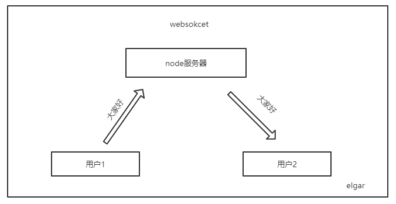
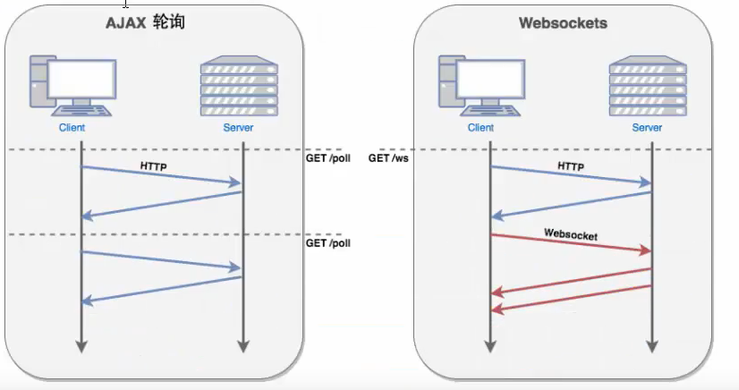

# websocket 入门
本文内容：
- H5 使用 websocket 通信
- 用 Node.js 创建 websocket 服务
- 实现基于 websovket 的聊天室

# 1. H5 使用 websocket 通信
websocket 是基于 TCP 的一种网络协议，可以实现全双工通信，也就是说，服务器可以给用户主动发送消息，这是 http 协议做不到的。 http 请求只能用户可以发送，服务器做相应。所以在实时通信领域 websovket 比较占优势，比如聊天等。

（1）创建服务
H5 已经提供websocket服务了，这样我们就可以使用。这个地址是一个开放的地址，你给它发送什么它会给你回复，你发送的数据。
var socket = new WebSocket('ws://echo.websocket.org')
// 创建一个服务
// 参数1：连接服务的地址
（2）发送数据和处理数据
我们创建完服务之后如何知道连接成功了呢？ 给我们提供了一个 open 事件，连接成功时会触发这个给事件。
// 当连接成功时控制台会输出 连接成功
socket.addEventListener('open',function(){
console.log("连接成功")
})
以下是常用事件，用法都一样这里不再讲解，可参考上面的逻辑：
| 事件 | 描述 |
|---|---|
| open | 连接成功的时候触发 |
| message | 用户收到服务器消息时触发 |
| error | 通信发生错误触发 |
| close | 连接关闭触发 |
连接成功了之后，就是发送数据。
<button class="btn">发送</button>
这里写了一个按钮，用js获取按钮后，添加一个发送事件（socket.send()），传入了一个字符串，当按下按钮时，向服务器发送这个字符串。
var btn = document.querySelector('.btn')
btn.addEventListener('click',function(){
socket.send("hello")
})
想看效果,打开谷歌浏览器的调试面板 -> Network -> WS 可以看到详细信息。
还剩最后一步，怎么接受服务器发来的数据？ 上面也列了出来，通过监听 message 事件可以得到数据。
// 接受服务器发来的数据
socket.addEventListener('message',function(e){
console.log(e.data) // hello
})
常用方法：
| 方法 | 描述 |
|---|---|
| Socket.send() | 发送数据 |
| Socket.close() | 关闭连接 |
# 2. Node.js 创建 websocket 服务
这里使用了一个 nodejs-websocket (opens new window) 的依赖包来开发的服务。
初始化（npm init -y命令初始化一个项目）一个新项目后t通过 npm install nodejs-websocket 安装。
下面的实例是，用nodejs-websocet 创建一个服务，在3000端口上运行。 只要有用户连接服务，会打印 ”新的连接“。
var ws = reqire('nodejs-websocket')
const serve = ws.createServer(function(){
console.log("新的连接")
}).listen(3000)
到这里创建了服务，下一步就是处理用户发来的请求。
# 处理用户请求
我们知道了每一次用户连接时，都会触发 createServer 中的函数，函数内部也可以监听一些事件。
这里的 text 事件可以监听用户发来的数据，我们这里获取到用户发来的信息后，小写之母转化成大写返回给用户（通过sendText函数）。
var server = ws.createServer(function (conn) {
console.log("新的连接")
// 监听用户发来的数据
conn.on("text", function (str) {
conn.sendText(str.toUpperCase()+"!!!")
// 处理用户发来的数据
})
// 监听用户断开后关闭服务
conn.on("close", function (code, reason) {
console.log("Connection closed")
})
// 处理用户错误信息
conn.on('error', ()=>{
console.log('用户来接异常')
})
})
# 3. 实现基于 websovket 的聊天室
服务端：
var ws = require("nodejs-websocket")
var PORT = 3000;
// 记录当前的用户数量
var userCount = 0;
// Scream server example: "hi" -> "HI!!!"
var server = ws.createServer((conn) => {
// 每一个用户进来都会触发，所以用户数量+1
userCount++;
// 设置用户名
conn.username = `用户${userCount}`
// 发送进入广播
radio(`${conn.username}进入了聊天室`)
conn.on("text", function (msg) {
radio(`${conn.username}：${msg} ---${new Date().toString().split('').slice(16,24).join('')}`)
})
conn.on("close", () => {
console.log("Connection closed")
userCount--
radio(`${conn.username}退出了聊天室`)
})
// 处理用户错误信息
conn.on('error', () => {
console.log('用户来接异常')
})
})
function radio(mess) {
// connections 是一个数组，保存了当前连接的所有用户
server.connections.forEach(user => {
user.sendText(mess)
})
}
server.listen(PORT, () => {
console.log("服务启动成功")
})
前端：
<!DOCTYPE html>
<html lang="en">
<head>
<meta charset="UTF-8">
<meta name="viewport" content="width=device-width, initial-scale=1.0">
<title>Document</title>
</head>
<body>
<input type="text" class="inp">
<button class="btn">发送</button>
<div class="text"></div>
<script>
var input =document.querySelector('.inp')
var btn = document.querySelector('.btn')
var text = document.querySelector('.text')
// 3. 创建一个soket服务
var socket = new WebSocket('ws://localhost:3000');
// 2. 连接成功是触发
socket.addEventListener('open',function(){
console.log("连接成功")
})
// 向服务器发送消息
btn.addEventListener('click',function(){
socket.send(input.value)
})
// 接受服务器发来的数据
socket.addEventListener('message',function(e){
console.log(e.data)
text.innerHTML += `<li>${e.data}<li>`
})
</script>
</body>
</html>